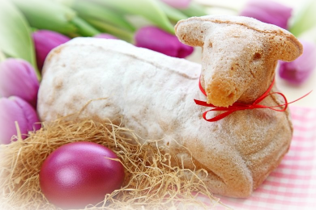

Ostereier färben
Ostereier wurden im frühen
Christentum als Symbol für die Auferstehung Jesu genutzt – vermutlich
ist darüber auch der Brauch entstanden, dass wir zu Ostern Ostereier
färben und Ostereier bemalen. Zum Osterfest werden die bunten Eier dann
als Dekoration benutzt oder verschenkt.
|

|
|
|

|
Osterhase
Der Brauch, dass der Osterhase
als österlicher Eierbringer genutzt wird, ist erst später zum Brauchtum
rund um Ostern hinzugekommen – schätzungsweise im 17. Jahrhundert. Die
gebrachten Eier, die der Osterhase oft im Garten und in der Natur
versteckt, erreicht mit der Ostereier Suche ihren Höhepunkt und bringt
vor allem kleinen Kindern die größte Freude am Ostermontag. Der Hase,
der oft auch in Form von Schokolade verschenkt wird, ist in Deutschland
an Ostern jedenfalls nicht mehr wegzudenken.
Hast Du eigentlich gewusst, dass das Puschelschwänzchen vom
Hasen auch als Blume bezeichnet wird?!
|
|
|
Osterlamm
Zum Osterfest gehört für viele
Menschen auch das Osterlamm. Seinen Ursprung hat diese Tradition aus
dem Judentum, wo zum Passahfest ein Lamm geschlachtet wird, um Gott zu
gedenken. Auf vielen Tellern landet an Ostern aber kein echtes Lamm
mehr, sondern ein Lamm in Form eines Kuchens. Osterlamm backen gehört
also mittlerweile auch zu einem etablierten Brauch am Osterfest.
|

|